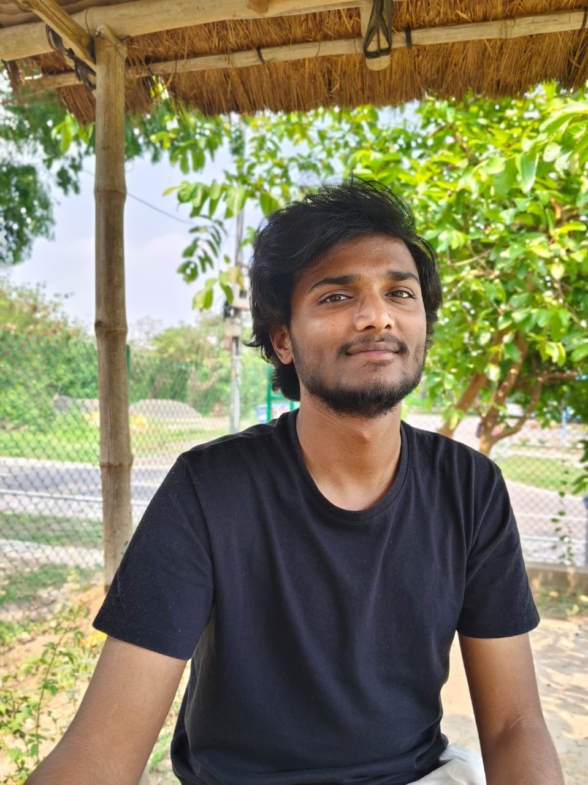

Vana Phalguna Krishna Das
Ultrafast spectroscopy · trARPES · terahertz and nonlinear optics
Research intern in the Femtosecond Spectroscopy Unit at the Okinawa Institute of Science and Technology (OIST), working on time- and angle-resolved photoemission spectroscopy (trARPES). I received my BS–MS in Physical Sciences from IISER Kolkata.
Research Focus
I study how electrons and the lattice respond in the first picoseconds after optical excitation. At OIST, I use trARPES with extreme-ultraviolet (XUV) probe pulses to follow the photoexcited electronic structure in momentum space. At IISER Kolkata, I used terahertz time-domain spectroscopy, femtosecond pump–probe and surface second-harmonic generation measurements, together with first-principles calculations, to study low-frequency vibrational modes, carrier dynamics, and coherent acoustic phonons. I also build and automate the experiments themselves, from optical alignment to data acquisition.
I am also interested in extending this work toward sample fabrication of quantum materials.
